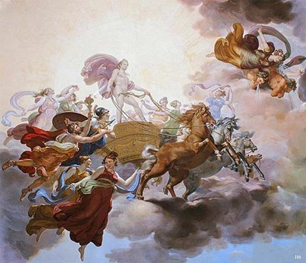

Truyện Prométhée trao ngọn lửa cho loài người còn có đôi đoạn kể khác nhau đôi chút:
Truyện kể rằng, xưa kia khi thần Zeus sáng tạo ra loài người, sáng tạo rồi nhưng thần Zeus lại không ban cho một đặc ân gì hết để họ có thể dùng làm vũ khí bảo vệ giống nòi. Họ sống trần trụi trong một cuộc sống tối tăm, hoang dại với biết bao nỗi hiểm nguy đe dọa họ từng phút từng giờ. Khi ấy trên thế giới chỉ có rặt là đàn ông, còn đàn bà chưa có. Các vị thần chưa sáng tạo ra cho cuộc sống người đàn bà. Việc làm đó của thần Zeus khiến Prométhée bất bình, vì Prométhée vốn yêu quý loài người.
Bữa kia nhân vụ phân xử một cuộc tranh chấp giữa các vị thần bất tử và loài người đoản mệnh ở Mecone, Prométhée với trái tim ưu ái đối với loài người đã chọn một con bò to béo giết thịt để dâng các vị thần và ban cho loài người. Vốn yêu quý loài người và không ưa gì thần Zeus, Prométhée đã chia thịt ra làm hai phần. Một phần là bộ lòng và những miếng thịt ngon Prométhée đem bọc lại trong một mảnh da xấu xí. Còn một phần là những miếng xương ngắn, xẩu dài, gân dai, bạc nhạc, thần đem bọc lại trong một lớp mỡ béo ngon lành. Và Prométhée kính cẩn dâng cả hai phần lên để cho Zeus lựa chọn. Zeus chẳng nghi ngờ gì, chọn ngay phần mỡ béo bọc ngoài vì nó hấp dẫn hơn cả. Nhưng hỡi ôi! Khi mở ra thì bên trong toàn là xương xẩu chẳng có lấy một miếng thịt nào. Zeus tức uất lên tận cổ song đành ngậm đắng nuốt cay. Nhưng cũng vì thế mà trong trái tim của vị thần này bùng lên một nỗi căm tức, thù địch đối với Prométhée và loài người. Vì câu chuyện này mà loài người từ đó trở đi, đời này qua đời khác, mỗi khi cúng tế thần linh đều phải kính cẩn đốt xương súc vật trên các bàn thờ uy nghi, trang trọng. Zeus thù ghét Prométhée và loài người. “Loài người là cái gì mà Prométhée lại quan tâm, chăm sóc chúng đến như thế? Đã thế ta sẽ không ban cho chúng ngọn lửa thiêng liêng nữa. Ta sẽ chẳng lấy cây tần bì làm đuốc, đốt cháy lên ngọn lửa hồng không mệt mỏi để trao cho chúng nữa. Để xem xem chúng sẽ sống ra sao và Prométhée liệu có cứu chúng khỏi họa tuyệt diệt không nào!” Zeus nghĩ thế và làm như thế. Nhưng Prométhée đã đoán được ý đồ của Zeus bởi vì thần vốn là người tiên đoán được mọi việc. Và lập tức Prométhée lấy ngọn lửa thiêng liêng của thiên đình ủ kín vào trong lớp ruột xốp khô của một loài cây sậy (férule) đem xuống trần trao cho loài người. Bằng cách ấy Prométhée đã đem “tia lửa giống” băng qua bầu trời xuống trần mà Zeus không hay không biết.
Thế là ngọn lửa của Prométhée đến tay loài người. Khắp mặt đất, chỗ này chỗ khác, nơi này nơi khác người người nhà nhà truyền cho nhau cái ánh sáng thiêng liêng bất diệt đó. Từ thiên đình nhìn xuống, bỗng nhiên Zeus thấy đâu đâu cũng rực lên từng đốm sáng nhấp nhánh, bập bùng. Zeus biết thôi thế là mưu đồ của mình đã bị Prométhée phá vỡ. Ngọn lửa thiêng liêng, báu vật riêng của các bậc thần linh, một vũ khí vô địch đã bị mất rồi. Ngọn lửa đã về tay người trần thế mất rồi. Một nỗi căm tức lại cắn rứt trái tim của thần Zeus: “Thế là loài người không bị tiêu diệt nữa... không thể tiêu diệt loài người được nữa! Chúng nó đã có một vũ khí vô địch mà chỉ riêng các vị thần Olympe mới có... nhưng không tiêu diệt được chúng thì ta cũng quyết không để cho chúng sống yên vui, hạnh phúc!” Zeus nghĩ thế và mưu tính một sự trả thù.

Prométhée trộm lửa của thần Mặt Trời
Các vị thần Olympe được triệu đến. Theo lệnh của Zeus, vị thần Chân thọt-Héphaïstos danh tiếng lẫy lừng, lấy đất và nước nhào nặn ra một người nhưng không phải là người đàn ông, mà là một người đàn bà, một thiếu nữ, phỏng theo hình dáng thanh tú, kiều diễm của các vị thần. Đương nhiên là người thiếu nữ đó phải vô cùng xinh đẹp. Ngay các vị nữ thần khi thấy cũng phải tấm tắc khen thầm. Héphaïstos còn ban cho người thiếu nữ đó tiếng nói thánh thót như chim, sức sống bừng bừng, rạo rực như hơi thở hừng hực của lửa nóng ở lò rèn. Và đó là vật dành riêng cho giống người trần đoản mệnh. Sức sống này được vị thần Chân thọt đưa vào ẩn náu trong một thân hình mềm mại như một làn sóng biển, uyển chuyển như một giống dây leo, sáng ngời như ánh trăng rằm, long lanh như những hạt sương chưa tan buổi sớm. Nữ thần Athéna có đôi mắt sáng ngời, ban cho nàng chiếc thắt lưng xinh đẹp của mình và một tấm áo dài trắng muốt. Nàng lại còn ban cho người thiếu nữ đó một tấm lụa mỏng để cô ta trùm lên vầng trán cao cao xa xa vời vợi của mình. Một chiếc mũ bằng vàng do đích thân thần Héphaïstos với bàn tay khéo léo của mình sáng tạo ra, được nữ thần Athéna đem tới âu yếm đặt lên đầu người con gái. Trên chiếc mũ vàng ngời ngợi này, Héphaïstos đã dày công chạm khắc biết bao hình ảnh đẹp đẽ của vũ trụ và thế gian: núi rừng trập trùng, suối sông uốn khúc, nai thơ thẩn dưới trăng, hươu từng bầy gặm cỏ... nơi đây dưới ánh bình minh, người người đang mải miết cày lật đất đen, nơi kia bên bếp than hồng, người người quây quần nướng thịt thú rừng, thỏ, nai săn được. Nữ thần Tình yêu và Sắc đẹp Aphrodite ban cho cô gái vẻ đẹp duyên dáng, dục vọng đắm say và sự khêu gợi thầm kín. Còn thần Hermès ban cho cô gái tài nói năng tế nhị, dịu dàng, có thể cám dỗ làm xiêu lòng người khác. Thần lại ban cho cô gái cả tài che giấu ý nghĩ thật của mình, trái tim nghĩ một đằng, miệng nói một nẻo. Đó là sự không trung thực và thói xảo trá, ỏn thót, điêu ngoa. Cả những lời nói nịnh khéo, khen bừa, lẩn tránh quanh co để được vừa lòng tất cả mọi người, hoặc lấp lửng nước đôi, mặn nồng vừa đấy mà đã nhạt phai ngay liền, thoắt khóc, thoắt cười đều do vị thần Trộm cắp Hermès ban cho cô gái hiền dịu, trong trắng, đẹp đẽ tuyệt vời đó. Tiếp đến những nữ thần Duyên sắc-Charites (thần thoại La Mã: Graces)60 và nữ thần Khuyên nhủ61 đeo vào cổ người thiếu nữ những chiếc vòng vàng muôn phần xinh đẹp. Còn những nữ thần Thời gian-Heures62 có mái tóc đẹp đội vào đầu cô gái vòng hoa xuân rực rỡ thắm sắc thơm hương.
Khi mọi việc đã xong xuôi, Hermès tuân theo ý định của thần Zeus, đặt tên cho người thiếu nữ đó là “Pandore” nghĩa là “có đủ mọi tài năng”. Mà đúng thế, bởi các vị thần đã ban cho người con gái đó đủ mọi tài năng. Thần Zeus quyết định đưa người con gái này xuống trần để làm vợ Epiméthée. Từ nàng Pandore này sẽ sinh sôi, nảy nở ra giống đàn bà, một loài độc hại cho giống đàn ông mà giống đàn ông không sao dứt bỏ được bởi vì, theo sự sáng tạo của các vị thần, giống đàn bà là loài không thể chịu đựng được cuộc sống vất vả, nhọc nhằn, nghèo túng, khó khăn mà chỉ sinh ra để sống trong cảnh an nhàn, sung túc và hưởng thụ kết quả lao động khó nhọc của người đàn ông, cũng như gây ra cho người đàn ông biết bao điều đau khổ, phiền muộn trong chuyện hôn nhân và gia đình. Người đàn bà sẽ là người bạn đường của người đàn ông nhưng là người bạn đường gây ra những nỗi bất hạnh cho người đàn ông. Đó là cái tai họa mà thần Zeus ban cho loài người63.
Theo lệnh của Zeus, vị thần Dẫn đường sáng suốt Hermès đưa Pandore xuống trần để làm bạn với Epiméthée. Zeus còn giao cho Pandore một cái chum đậy kín (có chuyện kể là cái hộp, cái tráp) và căn dặn kỹ, dặn đi dặn lại Pandore không được mở ra xem.
Không phải kể dài dòng hẳn mọi người cũng đoán biết được đứng trước Pandore, chàng Epiméthée sẽ như thế nào. Anh ta bối rối, ngây ngất đến đờ đẫn người ra trước sắc đẹp của Pandore. Vốn là người có đầu óc nặng nề, chẳng tỉnh táo gì, nay trước tình cảnh này anh ta lại càng mất tỉnh táo hơn nữa, nhất là khi được nghe những lời nói dịu dàng, được tiếp nhận những cử chỉ rất rất đáng yêu của Pandore. Thế là Epiméthée quên sạch cả những lời dặn dò chắc chắn của Prométhée trước lúc Prométhée bị thần Zeus sai bộ hạ đến bắt đi, giải đến một vùng núi đá hoang vắng và xiềng Prométhée vào đó. Vì là người tiên đoán nên Prométhée biết trước mưu đồ của Zeus. Chàng dặn lại Epiméthée, tuyệt không được nhận một tặng phẩm gì, tiếp nhận một ai của thần Zeus đưa đến. Nếu có thì phải gửi trả lại các vị thần Olympe ngay.
Nhưng làm sao mà Epiméthée nhớ được lời căn dặn ấy hay dẫu có nhớ thì làm sao mà Epiméthée có đủ nghị lực để thực hiện đúng lời căn dặn ấy, và việc phải xảy ra đã xảy ra. Epiméthée cưới Pandore làm vợ. Không rõ đôi vợ chồng này đã sống với nhau bao nhiêu ngày để cho đến một ngày kia họ gây ra tai họa cho thế gian và loài người, cái tai họa gớm ghê truyền kiếp bắt đầu từ gia đình họ. Số là Zeus có trao cho Pandore một cái chum đậy kín và dặn đi dặn lại Pandore không được mở ra xem. Pandore nói điều đó cho Epiméthée biết. Nghe lời vợ, chàng cẩn thận đưa chum vào trong phòng và chẳng hề ngó ngàng, táy máy đến cái vật thiêng liêng ấy của thần Zeus. Chàng cũng không quên dặn bảo gia nhân điều cẩn mật mà vợ chàng đã từng nói đi nói lại với chàng nhiều lần. Nhưng bữa kia, khi Epiméthée đi vắng, Pandore ở nhà, bỗng đâu từ trái tim nàng ngọ nguậy thói tò mò muốn biết xem trong chiếc chum kia đựng những gì mà thần Zeus lại ra lệnh nghiêm cấm ngặt nghèo đến thế, căn dặn kỹ lưỡng đến thế. Pandore đắn đo suy nghĩ, nửa muốn nửa không, nhưng rồi nghĩ quanh, nghĩ quẩn thế nào, nàng lại để cho tính tò mò xúi giục. Thật là ma đưa lối quỷ dẫn đường! “Chậc, cứ mở ra một tị, nhoáng cái thôi rồi đậy kín, chắc chẳng tội vạ gì...” Pandore nghĩ thế và mở nắp chum ra. Một cơn gió lốc từ đáy chum cuốn bay lên, ùa ra ngoài làm Pandore tối tăm mặt mũi. Những thứ gì trong đó? Đó là những hạt giống, những hạt giống của mọi loại tai họa như: Chiến tranh, Đói khổ, Trộm cắp, Lừa đảo, Phản bội, Dối trá, Ghen tị, Thù hằn, Ức hiếp, Bạo lực, Keo kiệt, Bủn xỉn, Bạc ác, Bất nhân, Bất nghĩa, Bệnh tật, Dịch tả, Thương hàn, Dịch hạch, Sốt rét... Lũ lụt, Động đất, Sụt đất, Núi lửa phun... tóm lại là mọi thứ Tai họa, Xấu xa và Tội ác.
Pandore đậy vội nắp chum lại, thở phào một cái. Nàng có biết đâu hành động tò mò của nàng đã gây cho loài người một cuộc sống bi thảm, khốn khó mà không bút nào tả xiết. Những hạt giống của mọi thứ Tội ác, Xấu xa, Tai họa bay đi khắp nơi trên thế gian nảy mầm, đâm nhánh ở bất cứ chỗ nào có con người, luồn lách vào trái tim con người. Và cũng từ đó trở đi loài người mất đi cuộc sống vô tư, êm ấm, hạnh phúc. Tuy nhiên, trong cuộc sống, phúc họa, buồn vui, sướng khổ thường bên nhau; có lẽ nào bên cái tai bay vạ gió đó mà loài người trần tục chúng ta phải chịu há chẳng còn điều gì an ủi chúng ta? Có, nhất định phải có! Và đúng thế, Zeus còn bỏ vào, bỏ lẫn vào trong muôn vàn hạt giống của mọi loại Tội ác, Xấu xa, Tai họa một hạt giống Hy vọng. Hạt giống này không bay đi lẫn vào cùng với đám những hạt giống kia. Nó còn nằm lại ở đáy chum. Và Pandore đã kịp đậy nắp chum để giữ nó lại. Hạt giống Hy vọng ở lại với con người, còn lại với cuộc sống con người. Nghèo nàn thay một hạt giống an ủi! Song cũng được, cũng tốt. Và với chỉ với hạt giống Hy vọng không thôi, loài người vẫn sống, cố sống, cứ sống, không chịu để cho những Tội ác, Xấu xa, Tai họa đè bẹp, và chỉ với hạt giống Hy vọng không thôi, loài người đương đầu với tất cả thử thách trong cuộc sống của mình. Và có lẽ họ tin rằng với hạt giống Hy vọng này, một ngày kia họ sẽ khôi phục lại cảnh đời thái bình, hạnh phúc xưa kia bằng mồ hôi, nước mắt của họ.
Ngày nay trong văn học thế giới, thành ngữ Cái chum của Pandore hoặc Cái hộp của Pandore chỉ một sự việc, sự vật gì mà bề ngoài thì hào nhoáng, đẹp đẽ nhưng bên trong lại xấu xa, thối nát, độc địa giống như những câu tục ngữ Khẩu Phật tâm xà, Miệng thơn thớt, bụng ớt ngâm, Miệng nam mô bụng một bồ dao găm trong văn học nước ta.
[60] Charites gồm ba nữ thần Aglaé (La Brillante), Thalie (La Verdoyante), Euphrosyne (La Joie Intérieure).
[61] Persuasion, Peitho (thần thoại La Mã: Suada).
[62] Heures gồm hai nữ thần Thallo và Carpo, sau thêm một hoặc hai nữ thần nữa là Eiréné và Auxo, cai quản thời gian chín nở của mùa màng. Còn có tên gọi là các nữ thần Saisons (mùa màng).
[63] Theo Hésiode La Théogonie, Les Travaux et les jours.